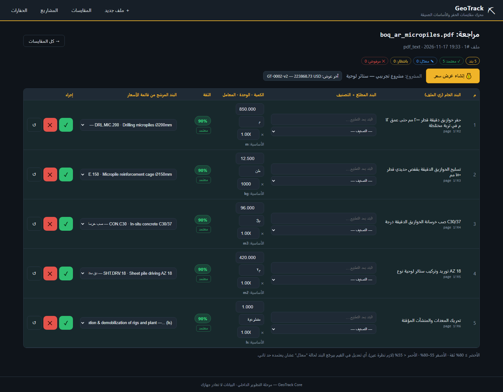
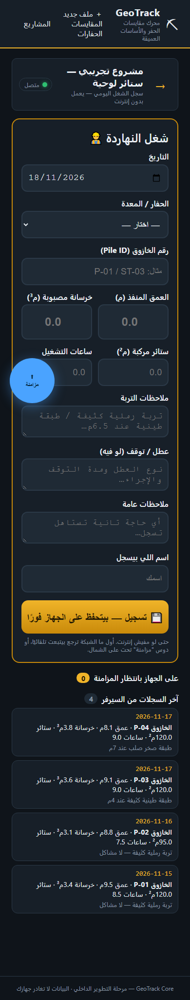
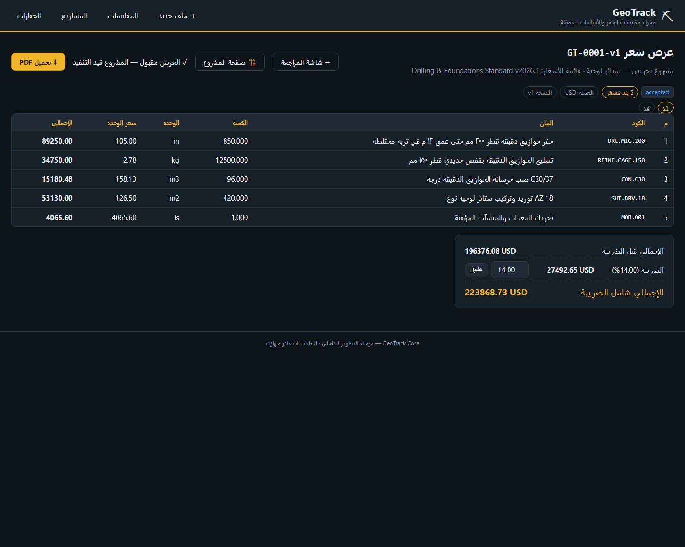

من ملف المقايسة للعرض المعتمد — إلى سجل ميداني بلا نت — إلى الفاتورة النهائية من واقع الشغل الحقيقي. منصة واحدة.
أيام لكل مناقصة — مقارنة بتسعير آلي في دقائق بدلًا منها
يومًا متوسطًا لتسوية فاتورة واحدة — بدلًا من 5–7 أيام بعد إنهاء المشروع مباشرة
رقم عالمي يمكن الوثوق به: بلا نظام — ما فيش ملف موحد يوريك ما نُفّذ فعلًا
النتيجة المباشرة:
• عروض أقل — كل مناقصة تُنهي خلال ساعات بدل أيام.
• عميل يعتمد — PDF بعرض السعر الرسمي، تقرير فني للخوازيق، فاتورة كخُلاصة الموقع — كلها أورواق رسمية.
• تحصيل أسرع — الأوراق اللي الفاتورة تحتاجها جاهزة بمطابقة آلية، ما فيش مراجعات.
• قرارات بالبيانات — أنت تعرف في كل صباح ما نُفّذ أمس كمياره.
من ملف المقايسة إلى عرض السعر إلى الحفر والستائر اللوحية في الموقع ثم الفاتورة —
كل ذلك في نظام واحد، يُحسب آليًا ويُراجع بشريًا قبل أي رقم يظهر للعميل.
PDF / Excel / Word (عربي أو إنجليزي) — وحتى الممسوح منه بصورة.
ما فيش سرعة بدون دقة — الدقة تُراجِعها.

شاشة المراجعة — بنود بالعربي والإنجليزي مع نسبة ثقة لكل بند.
شاشة سواق الحفار على مقاس التليفون:
في المواقع المعزولة — لا شبكة، لا دفتر، لا تأخير إدخال بيانات.

عملاؤك ما يشكّوش — يعاينوا.

عرض السعر الرسمي (GT-0001-v1) — التصميم نفسه بيتستخدم في الفاتورة الختامية.
الذكاء الاصطناعي (اختياري):
يقرأ نص البند المكتوب بإيد الورق في صورة المقايسة ويرجّعه لحقل منظم (الكمية، الوحدة، الوصف) — ويقترح بند قائمة الأسعار المناسب.
لكنه ممنوع من لمس الأرقام — الأسعار والكميات دايمًا حسابات حتمية، مش ذكاء، ومفيش رقم يتبنى على تخيل.
الحتمية (Heuristic):
كشف الجدول من الـ PDF. تحليل الأرقام العربية (٨٥٠) والفواصل. تحويل الوحدات طن ↔ كجم. حساب الإجمالي × الوحدة المعرفة بالكتالوج.
ده كله deterministic — نفس الملف بيعطي نفس الناتج دايمًا.
لأن العميل مش هيقبل الأخطاء: لو بند ماكنتش واثق منه الذكاء، النظام يعلمه بإشارة واضحة — وإنت اللي تراجعه قبل ما يظهر للعميل.
قبل GeoTrack
بعد GeoTrack
النتيجة: نفس الفريق — يقدر ياخد نفس عدد المناقصات، أو ضعفها، بنفس الدقة.
سيناريو: مناقصة خوازيق دقيقة 32 خازوق + ستائر لوحية 420 م².
ترفع PDF المقايسة ← النظام يستخرج الـ 800 بند ← مهندسك يراجع في 15 دقيقة ← العرض يطلع.
السواق يسجل من التليفون: 850 م حفر + 96 م³ خرسانة + 420 م² ستائر ← كل سجل يدخل لحظتها.
النظام يقارن العقد بالمنفذ ← فاتورة ختامية جاهزة + تقرير فني للاستشاري ← تسليم وتوقيع.
نفس السيناريو — للستائر اللوحية، الخوازيق الدقيقة، والجيت جروت.
✓ مبني للحفر — ليس نظام ERP عام يُجمَّع على مقاسك. الوحدات: حفر، خوازيق، ستائر، خرسانة.
✓ عربي/إنجليزي — مقايسات عربية وإنجليزية، أزرار عربية، RTL كامل.
✓ بدون نت — في الصحراء أو الأنفاق أو البحر.
✓ بدون تضحية بالدقة — كل رقم يُراجع بشريًا قبل العرض.
✓ لا تحتاج فريق IT — في المتصفح، تشتغل من أي جهاز، موبايل أو ديسكتوب.
✓ أرقامك، قائمتك — الأسعار والخصومات والتكاليف من شركتك أنت.
✓ بدون رسوم اشتراك لمرحلة التجربة — يعمل على جهازك أو سيرفرك.
✓ مفتوح المصدر (MIT) — يقبل التخصيص لخط إنتاجك.
حمّل المشروع — 83 اختبار أخضر — ورفع مقايستك الحقيقية عليه. الفرق وحده يشيح.
Software Components by GeoTrack — Open Source (MIT) · 2026